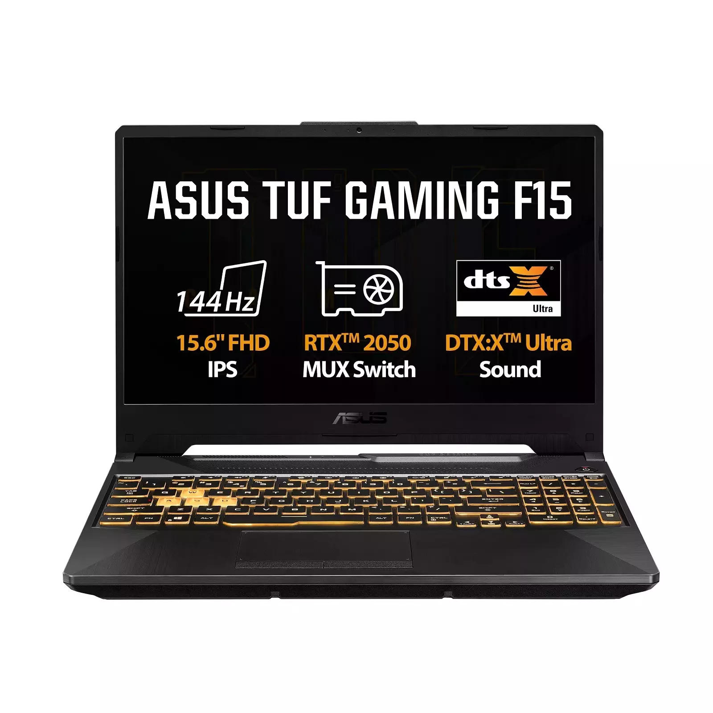

ASUS TUF Gaming F15 Review

Quick Specs
- Processor: Intel Core i7-12700H
- Graphics: NVIDIA GeForce RTX 4060
- RAM: 16GB DDR5
- Display: 15.6" FHD 144Hz IPS
- Storage: 1TB NVMe SSD
Performance Tests
Gaming Performance
| Game Title | Resolution | Settings | Avg FPS |
|---|---|---|---|
| Cyberpunk 2077 | 1080p | High | 65-75 FPS |
| Call of Duty | 1080p | Ultra | 90-110 FPS |
| Fortnite | 1080p | Epic | 120-140 FPS |
Benchmark Scores
- 3DMark Time Spy: 9,200
- Cinebench R23: 13,500
- PCMark 10: 6,500
Design & Build
- Weight: 2.2 kg
- Keyboard: RGB backlit
- Military-grade durability
Thermal Performance
- Idle: 40-45°C
- Gaming: 75-85°C
- Cooling: Dual fan system
Battery Life
- Gaming: 1.5-2 hours
- Video Playback: 6-8 hours
Pros & Cons
✅ Pros
- Excellent gaming performance
- Durable military-grade build
- Good thermal management
❌ Cons
- Display color accuracy could be better
- Bulky and heavy
Verdict
Rating: 8.5/10
The ASUS TUF Gaming F15 offers excellent value for budget-conscious gamers, delivering strong performance with reliable build quality.